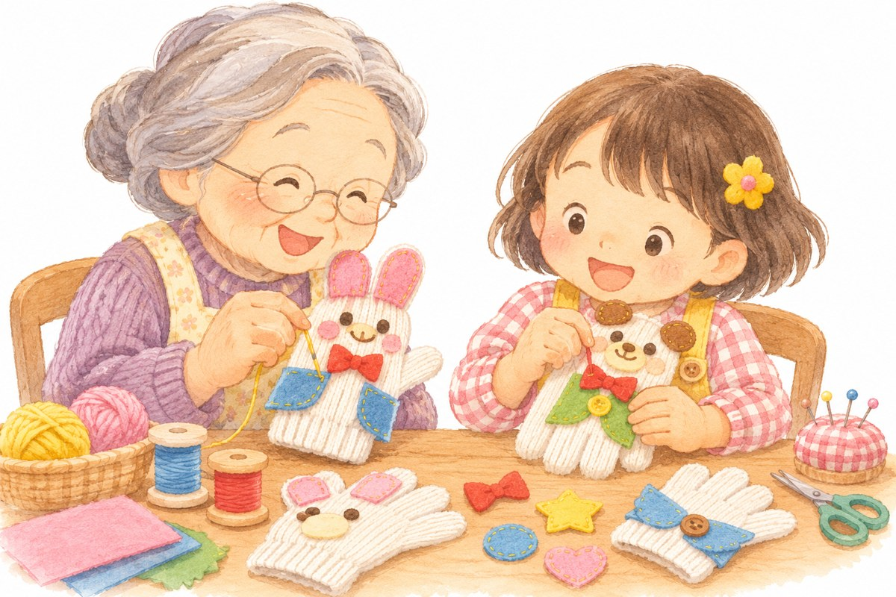

人前に出なくても、
主役になれる
人形劇は、上手になる前から参加できます。人形の陰から演じるので、年齢や見た目、体力の心配も少なめです。机一つと幕一枚、軍手一組から始められます。


案内役から、ひとこと私も最初は「人前は苦手」でした。でも人形が代わりに出てくれるから、不思議と声が出るんですよ。
「得意」が、そのまま役に立つ
オペラには発声の技術が、バレエには長年の訓練が求められます。人形劇は、身近な材料で作った人形を、ふだんの話し声で動かすところから始められます。
| あなたは… | 人形劇での活躍の場 |
|---|---|
| 人前が苦手 | 舞台の裏から人形を演じる |
| 歌が苦手 | 台詞や人形の動きで表現する |
| 運動が苦手 | 小さな人形を操作する |
| 絵が好き | 人形や舞台をデザインする |
| 工作・日曜大工が好き | 人形や舞台装置を作る |
| 裁縫が得意 | 人形や衣装を作る |
| お話を考えるのが好き | 脚本を書く |
| 高齢で激しい運動が難しい | 座って演じる形式に参加する |
| 子育て中で時間が限られる | 家でできる人形作り・衣装作りを担う |
山梨市の「こんぺいとう」は、保育園のクリスマス会のために母親7人が指人形劇を披露したのが始まりです。団員の多くは農家の主婦で、人形も脚本も舞台装置もすべて手作りしています。川崎市の「にこにこあおむし人形劇団」は、幼稚園で出会った8人のママ友が2011年に結成し、結成15年を迎えました。
人形劇にも高度な技術はあり、上達には練習が必要です。大切なのは、上達する前から参加でき、参加しながら上達できることです。
年齢も見た目も、人形の陰に
70歳の男性が5歳の女の子を、小学生が80歳のおじいさんを演じる。身長180cmの人がネズミを、150cmの人がライオンを演じる。人形劇ではどれも自然なことです。観客が見ているのは人形で、演じる人自身ではないからです。
川崎市の「デフ・パペットシアター・ひとみ」は、人形遣い6名のうち2名が聴覚障害者で、障害の有無に関係なく作品を届けています。プロの例ですが、人形が身体や言語の違いを超える「共通の言葉」になることを示しています。アマチュアでも、車いすに座ったまま操作する、声を担当せず操作だけを担う、といった役割の分け方で、多様な人が参加できます。
小さな場所で、少ない費用で
公民館、図書館、保育園、児童館、高齢者施設。人形劇はどこでも舞台になります。観客が劇場へ行くだけでなく、芸術のほうが観客のいる場所へ出かけられるのも良いところです。
富山県高岡市のサークルは、観覧無料で、スタッフの月会費は500円です。魚津市のサークルは、子ども服を再利用して人形を作っています。
人形の種類をのぞいてみよう
| 人形の種類 | 主な材料 | 特徴 | 始めやすさ |
|---|---|---|---|
| 軍手人形・指人形 | 軍手、フェルト | 指一本で一人物。歌遊びにも | ★★★ |
| パクパク人形 | 靴下、紙箱、布 | 口が開いて話すように見える | ★★★ |
| ペーパーサート | 画用紙、割り箸 | 絵を描くだけで登場人物になる | ★★★ |
| 手使い人形（グローブ） | 布、発泡スチロール | 頭と両手を指で動かす定番 | ★★ |
| 棒使い人形 | 木材、布、針金 | 大きめで、歩きや身ぶりが豊か | ★ |
| 糸操り（マリオネット） | 木材、糸、金具 | 繊細な動き。上達に時間がかかる | ☆ |
※舞台や音響、人形の運搬や補修には費用がかかることもあります。小さく始めて、少しずつ本格的にしていけます。
人形ができたら、次は仲間と観客の出番です。舞台がどう動くのか、のぞいてみましょう。
仲間と観客のページへ →